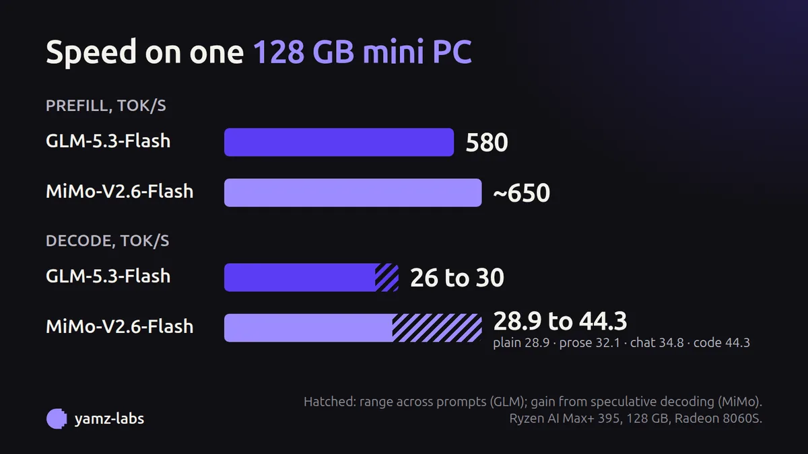
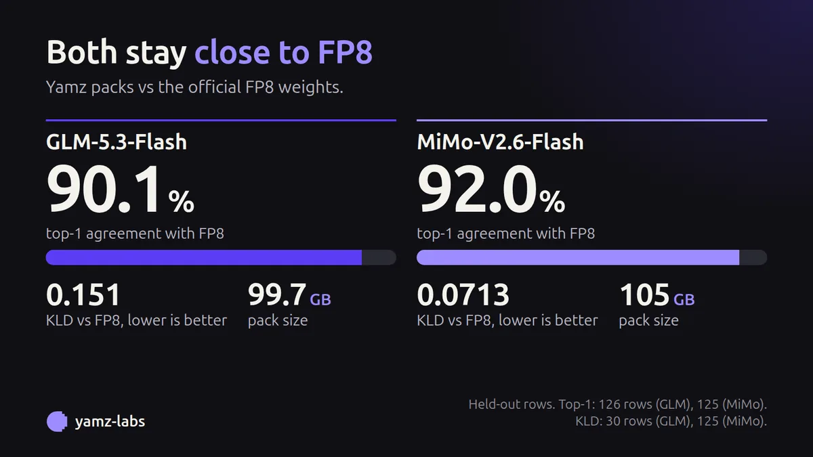

Two 300B-parameter models. One 128 GB mini PC.
Yamz Labs quantizes large open models and builds the engine to run them on a single AMD Ryzen AI Max+ 395 machine with 128 GB of memory. No server, no cloud: the weights, the engine and the benchmarks are public.
First two models
GLM-5.3-Flash
Top-1 agreement with the official FP8 model: 90.11 % on 126 held-out rows. Prefill measured at 3.5K, 14K and 64K tokens.
Model cardMiMo-V2.6-Flash-MOPD
Top-1 agreement with the official FP8 model: 91.99 %. Decode uses speculative decoding: 32.1 on prose, 34.8 on chat, 44.3 on code.
Model card

All figures: AMD Ryzen AI Max+ 395, 128 GB, one machine. Quality is measured against the official FP8 weights. Uncensored variants of both models are also published. Methods and limits are on each model card.
Kyojin engine
Kyojin runs these models on AMD Strix Halo (gfx1151) with ROCm. It is built on ExLlamaV3 by turboderp, whose EXL3 format and quantization work make this possible. Our thanks to turboderp and the ExLlamaV3 contributors. Kyojin adds the kernels, memory handling and speculative decoding that these models need on unified-memory hardware.
For companies
The same work, applied to a business: a private model installed on your own machines, automation of repetitive office tasks, and websites. Your data stays inside the company. Services are delivered in France by GETA Solutions Informatique, with entry prices shown.
getasolutions.fr/informatique (in French)
First release
More models and speed work are coming. Contributions and benchmarks are welcome: run a model on your own machine and tell us your tokens per second and hardware.